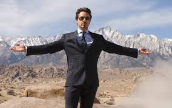

Ро́берт Джон Да́уни — мла́дший (англ. Robert John Downey Jr.; род. 4 апреля 1965 года, Манхэттен, Нью-Йорк, Нью-Йорк, США) — американский актёр, продюсер и музыкант. Лауреат премий «Золотой глобус» (2001, 2010), BAFTA (1993), премии Гильдии киноактёров США (2001) и «Сатурн» (1994, 2009, 2014, 2019), номинант на премии «Оскар» (1993, 2009) и «Эмми» (2001). Начал актёрскую карьеру ещё ребёнком, сыграв в фильме своего отца «Загон» (1970). Ближе к началу 1990-х Дауни становится востребованным актёром, в частности, благодаря ролям в фильмах «Эйр Америка» (1990), «Большая пена» (1991) и «Прирождённые убийцы» (1994). Наиболее известной и удачной ролью Роберта в XX веке считается роль Чарли Чаплина в одноимённом байопике Ричарда Аттенборо, принёсшая ему премию BAFTA и первую номинацию на «Оскар».
